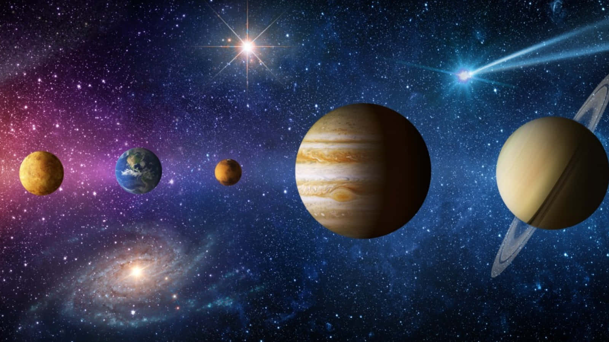

"The important achievement of Apollo was demonstrating that humanity is not forever chained to this planet and our visions go rather further than that and our opportunities are unlimited." Astrology and magic can encompass a wide range of beliefs and practices. Astrology involves the study of celestial bodies' positions and movements to understand and interpret their influence on human affairs and natural events. It's used to create horoscopes and offer insights into personality traits, relationships, and life events based on birth dates and times. Magic, on the other hand, typically refers to the practice of using rituals, spells, and supernatural forces to influence events, people, or nature. This can include practices such as spellcasting, divination, and rituals designed to harness spiritual or cosmic energies.Together, astrology and magic sometimes overlap in practices like astrological spellcasting or using celestial alignments to guide ritual timing. However, their specific interpretations and applications can vary widely across different cultural and spiritual traditions. If you have more specific questions or aspects of astrology or magic you're interested in, feel free to ask!